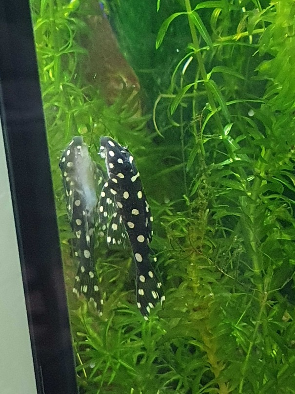
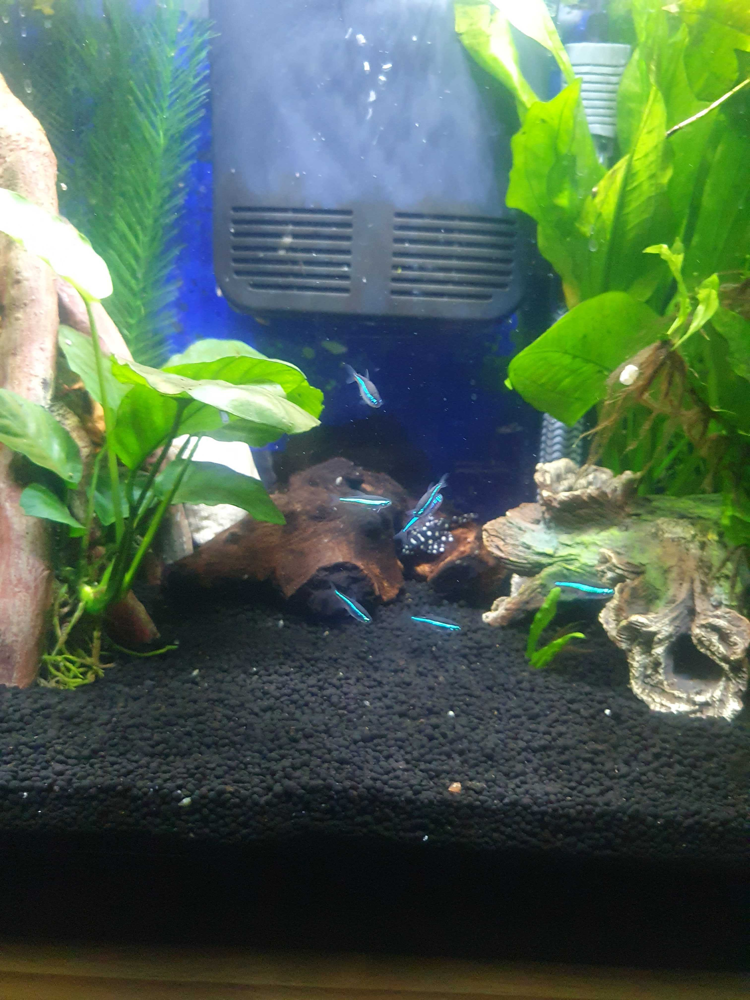
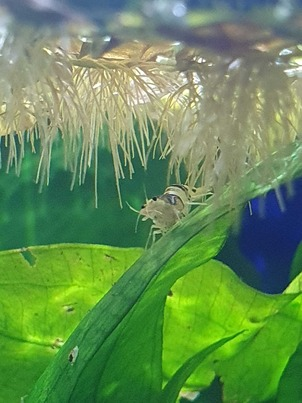
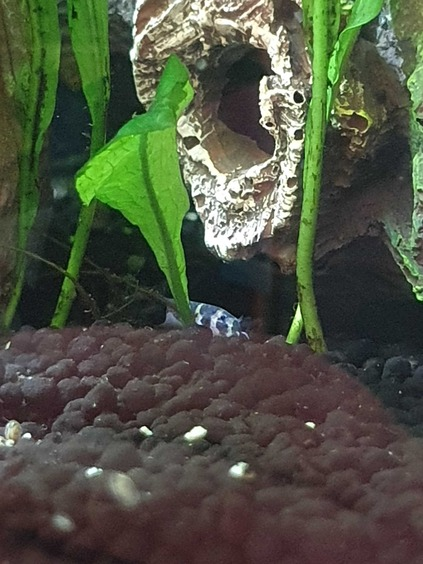

Here it is
Wow
My favourite fish shopOrinoco is a mini Snowball Pleco and he'll reach a maximum size of 10cm (other pleco species can grow up to 2ft long). He's named after the river his species is native to in Venezuela (although there's also a womble named Orinoco)
The green neon tetras were the first fish in the tank, I have a school of seven of them. They like to hide out in the plants at the back
The shrimp are the busiest in the tank, they make a very efficient clean up crew and are the chillest dudes ever
The newest tank additions, they are still quite shy
There is a never ending supply of pond snails in the tank so I hired some assassins to manage the population